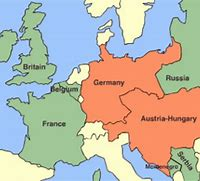

<!DOCTYPE html>
<html lang="en"></html>
<head>
<meta charset="UTF-8" />
    <meta http-equiv="X-UA-Compatible" content="IE=edge" />
    <meta name="viewport" content="width=device-width, initial-scale=1.0" />
    <link rel="stylesheet" href="stylesheet/styles.css" />
    <title> World War 1 Timeline</title>
</head>
    <h1>1914, Britian and Germany</h1>
<body>

<p>Britain declared war on Germany on the fourth of August in 1914, taking advtange of the war alrady at hand. The two countries had a rivalry before hand.</p>
<p>Britian had the fear of Germany dominating europe and it would be a threat that needed to be contained.</p>





<p>Germany and the Austria-Hungary form and alliance together while Britian forms an alliance with most countries around them like, Belgium, France, and Italy</p>
<p>The same day Britian declared war on Germany was the same day the firt battle happened, because of German troops crossing the border into Belgium and assaulted the city of Leige</p>


<a href="../pages/page2.html">Continue here.</a>


</body>

